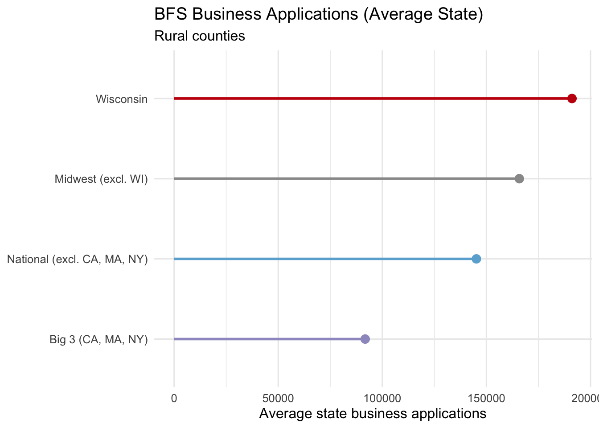
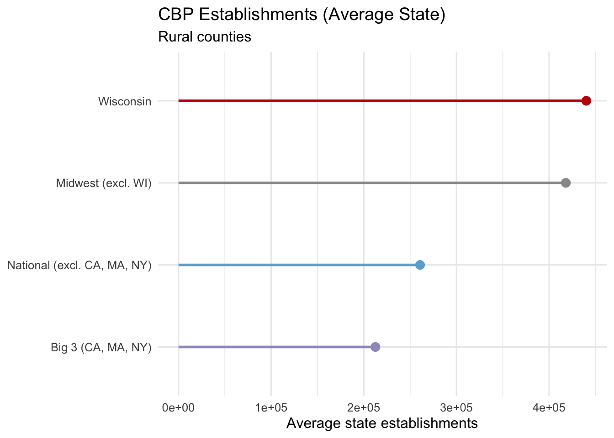
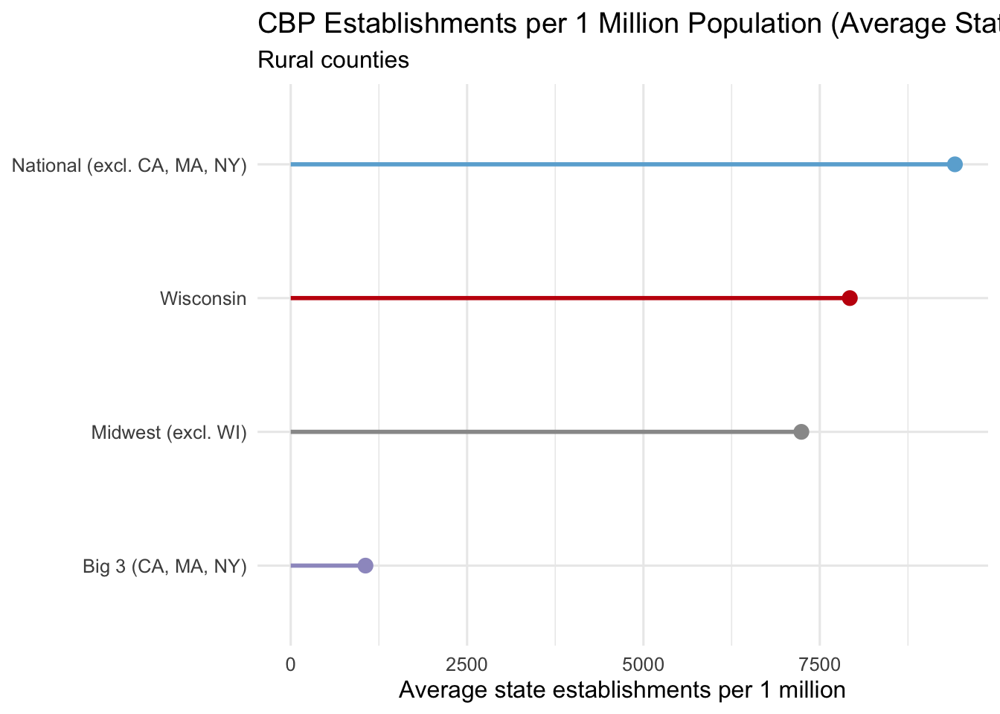
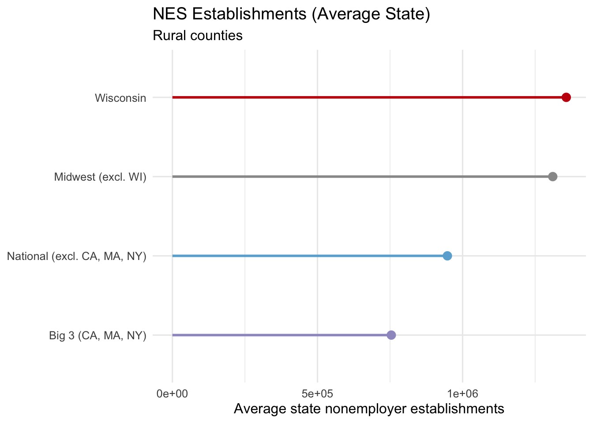
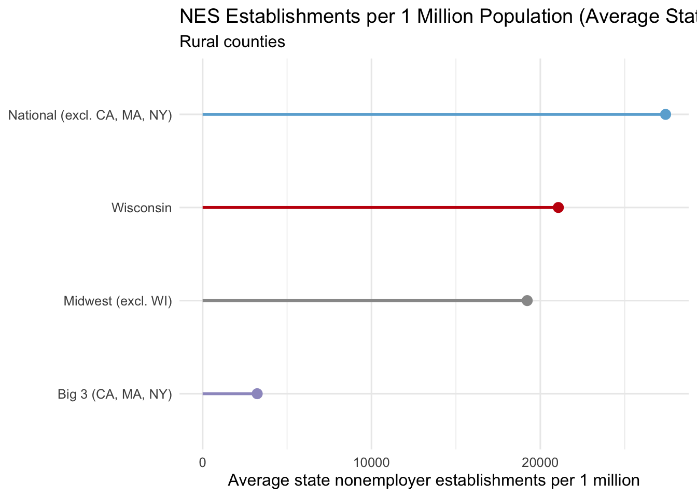

What’s driving rural Business Growth in Wisconsin?
Motivation
When analyzing the Business Formation Statistics (BFS) data in bfs_explore.html, we found that rural Wisconsin leads with respect to business applications between 2005 and 2024.

This exact same pattern was found in the County Business Patterns (CBP) establishments data from 2010 to 2023, which provides more granular details on sector-wise establishment statistics (note to self: Was there a reason we didn’t use the same time period, 2005-2024, as in BFS?)

To what degree does population play a role?
Below is the CBP lollipop but adjusted per 1 million rural population.

Does the pattern hold using nonemployer statistics?
Nonemployer statistics are shown below using nonemployer establishments (NESTAB) and the same rural-only comparison framework.

